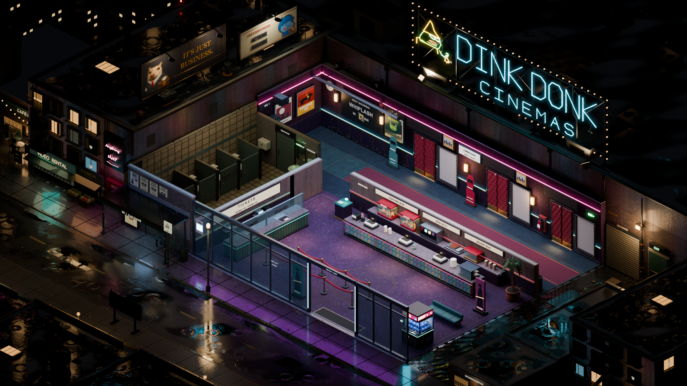
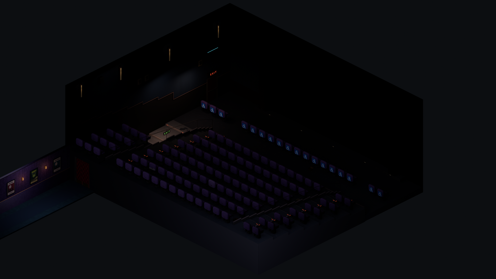

The lobby
The lobby looks onto a rainy street. Chatters appear as little guests who walk through the lobby. You can watch the whole visit without typing.

Street doors
- The glass entrance is on the street side, below the lobby carpet.
- The ticket windows are on the left side of the carpet.
- The red doors along the far wall lead toward the screens.
Finding a seat
In the auditorium, guests enter from the lower left and walk to an assigned seat. This example follows a guest to row F.
- The passage runs from the street-side corridor to the cross aisle.
- The stair aisle runs beside the raised rows.
- The guest turns into row F and moves along it to an empty chair.
When the lights change
The house lights fade as the film begins. The rows and the corridor remain faintly visible. Compare the same seats before and after the change.

House lights upFilm lightingAfter the film
The host can raise the lights during the credits. Guests can stay for a discussion or walk out through the corridor.